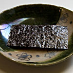

Kombu & SeaweedKombuThis important ingredient is used to make dashi, the essential basic stock for practically all Japanese recipes. Kombu is gathered in the shallow waters off Hokkaido, Japan’s northernmost island. The best variety, rishiri kombu, is 1/8” thick, 5” to 8” wide and grows anywhere from 5’ to 8’ long. When purchased in a specialty shop in Japan, it comes dried in full lengths, or is precut into convenient sizes, which are packed in flat plastic envelopes. It pays to buy the best quality you can find, as its subtle flavor varies widely. However, it might be hard to find the best varieties in the US. Kombu has virtually no protein, but is high in calcium, carotene, iron and iodine. It is thought to contain amazing cancer-fighting ingredients, which my father goes on and on about. NoriJapan produces more nori, both in quantity and variety, than any other country in the world. The early Japanese ate nori raw, as early as the 7th century. Today it is farmed; spores are planted in January on nets and placed in bays or lagoons. After harvesting the seaweed in autumn, it is washed in cold water and then spread thinly onto sheets to dry in the sun (much like papermaking). It is then toasted and cut into sheets, or seasoned with soy sauce and mirin to make flavored nori. With the popularity of sushi, you can now find nori at almost any grocery store in the US, where it comes in 8” x 7” black or dark green sheets. The better quality nori is thick and has a tight and even texture. These are used for making maki zushi, cut into pieces to eat with onigiri, or crumbled over cold soba noodles, seafood domburis, and other dishes. It has a crisp texture that melts in the mouth, and is fun to eat plain. My nieces and nephews love to eat whole sheets as a snack. Nori is high is protein and vitamins A and B1, and contains zinc, iron and calcium. Care should be taken to keep the packages dry in ziplock bags, as moisture can ruin its texture and make the sheets too soft to roll sushi. WakameWakame is the most popular type of seaweed in Japan. The Western name for this seaweed is sea mustard, but it has none of mustard’s bitterness. Highly nutritious, wakame is usually dried or preserved in salt, and is therefore considered a staple for the Japanese pantry. To reconstitute the dried variety, simply crumble a small handful (it expands greatly) and soak in a bowl of room temperature water for 10 minutes. Rinse, chop and serve raw in salads, or serve lightly simmered in soup. Prolonged cooking (or soaking) leads to soggy and overly soft wakame. When serving leftover miso soup, the old wakame should be replaced with fresh. |
|

|